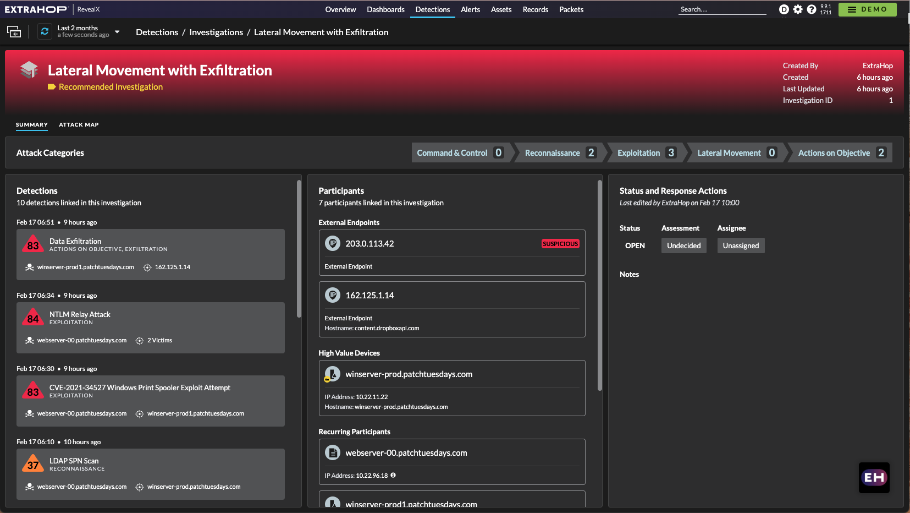
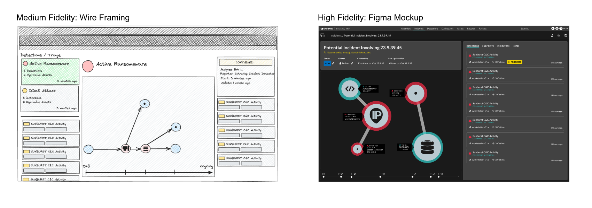
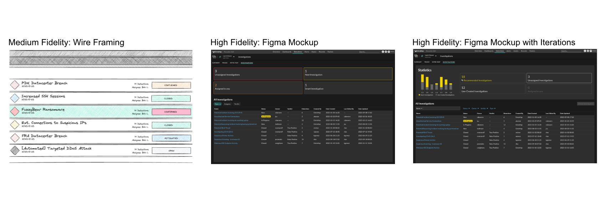
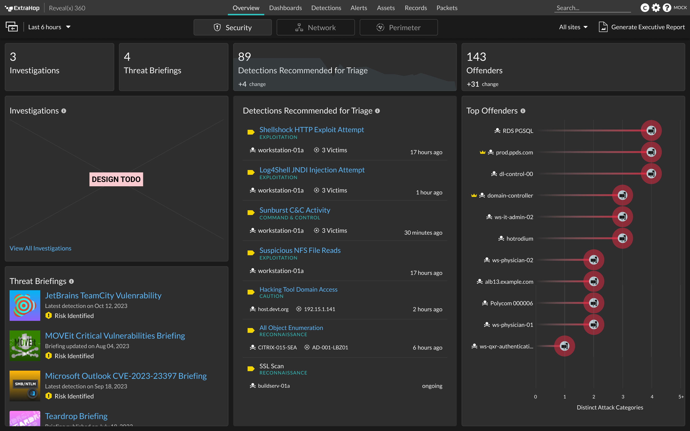
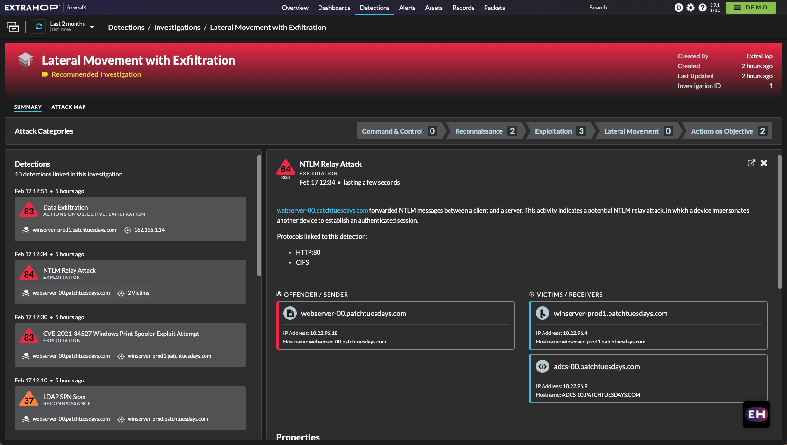
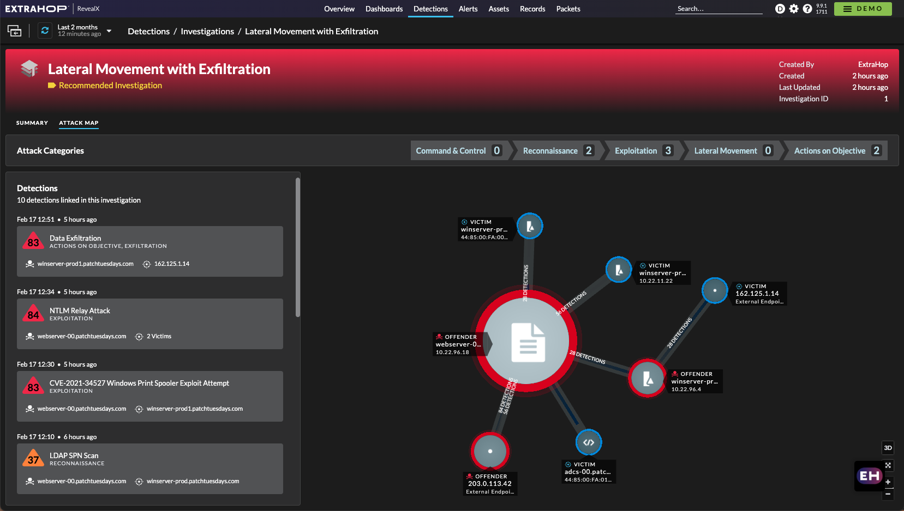
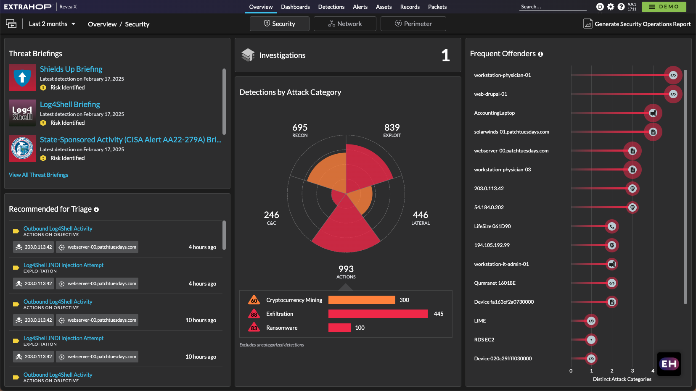
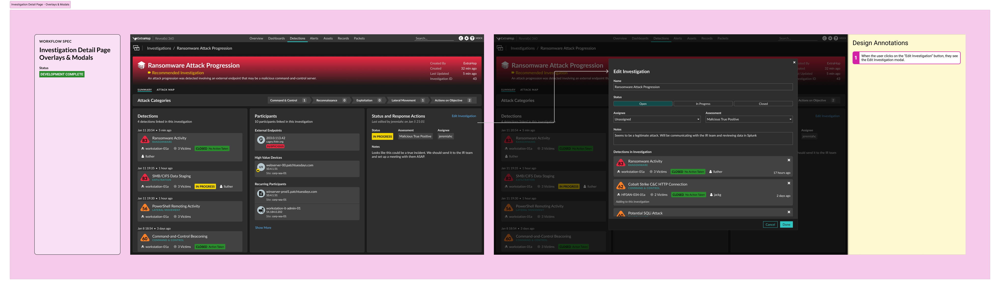

Information Architecture
User Research
As a cybersecurity tool, ExtraHop creates detections based on anomalous computer communication. A security analyst’s daily job is to triage these detections to determine whether they are truly malicious or expected normal computer behavior.
Security incidents often involve more than just one computer. They are a complex sequence of events that tell a story. For security analysts, it can be tough to stitch individual occurrences together and get a full picture of a malicious attack.
By visually summarizing the data about an investigation, security analysts will be able to quickly understand the nature of the threat. With this information, they will be able to triage detections faster and reduce their time to respond.
In a previous firmware version, a new feature called “Investigations” had been added to ExtraHop. Investigations allowed users to manually group detections together, after which the system would create a visual map of how the detections related to one another.
This product feature didn’t meet many of our current design goals. Primarily, it didn’t allow users to easily summarize information about the investigation. Users were only able to write a single note for each investigation, but we received feedback from users that they would like to keep track of their work with assignees and progress statuses too. Overall, this feature didn’t create a very compelling workspace and saw little usage.
To better understand how analysts investigate potential cybersecurity incidents, I interviewed a number of existing customers. In these interviews, I got an understanding of the most important pieces of information to an analyst when they’re viewing a detection for the first time.
The biggest takeaway from my research was that analysts first want to understand the critical devices that might be compromised. For example, servers that contain financial data will elicit a more serious response than the smart fridge in the cafeteria.
“My eye gets drawn to the overly sized detection map”
Another learning was that analysts prefer seeing hard evidence rather than the visuals that dominated the previous investigation page design. Two different users commented that with large visuals the page often became too cluttered, making it hard for them to know what to look at first.
Having gathered feedback from users on what was most important to them, I developed designs for the three key parts of the investigation workflow.
For this page I explored splitting the information to display into three key areas; detections, participants, and response. Visually, these elements are laid out from left to right, as this matches the importance of the information as the analysts explained to me during the research phase.
The timeline is a part of the summary page that shows the user how an attack unfolded over time. Given the feedback that the existing visuals were too heavy, I worked on a new approach that would hold less visual weight. The design I landed on was inspired by Gantt charts that are used in engineering projects to demonstrate the relationship between events or tasks over the course of a period of time.
It was expected that after the feature’s launch, customers would receive 10-20 smart investigations per year. Therefore the settings page would become a critical part of the workflow of analysts and their managers to stay on top of critical tasks. One of our business goals was to reduce analysts’ time to investigate or respond, typically measured in Mean-Time-to-Respond (MTTR). During user interviews on this subject, I found that there was a mixed appetite for displaying these metrics. Some users worried that displaying MTTR metrics without the right context might make management set unachievable goals. Through design iterations, I worked to find a balance between providing information to users about their critical tasks without adding unwarranted stress to an already hectic job.
When security analysts first log into ExtraHop, the first page they land on is the Security Overview. Elements of this page are designed to alert analysts to the most pressing tasks to work on. Through design iterations, I evaluated what information was most important to users at a first glance. I played around with using our “Hero Count” component to show key metrics like “Assigned to You”. Another option I considered was to include a bar chart which would let users quickly understand the status of all investigations.
After internal design reviews, I had opportunities to present Figma prototypes of the proposed designs to our customers. In these sessions, I focused on observing the usability of the design.
In their feedback, users appreciated the separate columns which allowed them to quickly glance at information before clicking in to get more details. They also saw the notes and assignment functions as critical to keeping a record of what was being investigated.
One element that users seemed to struggle with were the chevron arrows with security categories. Many users reported that they expected to be able to click on the chevrons to filter items within the investigation. I incorporated this feedback into the final design by applying a less “active” styling so that the elements looked less like buttons.
The final solution saw a number of changes from what I had designed in Figma. One challenge I faced during implementation was a request to de-scope the project. During our story writing process, engineering and product leadership identified a lack of sufficient developer capacity to meet the delivery timeline. Since the delivery date could not be moved, I found a way to design an MVP by removing some component animations and re-using existing components.
Here are more details about the final design elements:
This page is the main workspace for analysts triaging an investigation. The top of the page consists of information about the nature of the investigation including details about the type of attack. The core of the page is broken down into three sections; detection, participants and response.
 The settings page is designed for managing and reviewing all investigations. The key component of the page is the table, which includes fields such as assignee and status, enabling analysts to understand the highest priority item for them to work on.
New columns in the table allow analysts to answer questions like “Which investigations are assigned to me?” or “How many investigations are still in progress?”.
To alert users to new investigations, the updated design reuses our “Hero Count” component to display a large number that indicates the number of new detections. This strong visual component aims to grab the user’s attention as soon as they log in to make them aware of any high-priority items. To aid in this, the count is placed in the top-center of the page.
In post-release interviews with customers, the feedback was very positive. Initial telemetry shows that usage of the investigation feature grew by 40% six months after release.
potential incidents in nine months
Try this feature out for yourself on the ExtraHop online demo!
Finalized Figma Component for the participant list
Finalized Figma Deliverable with comments and workflow arrows